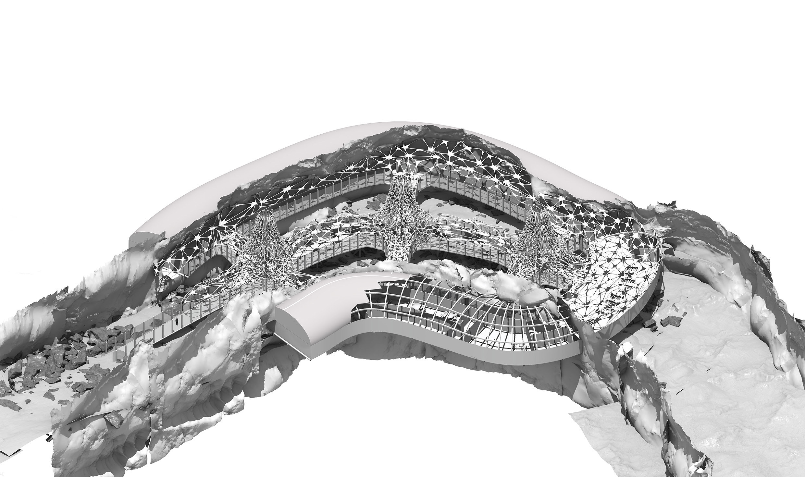
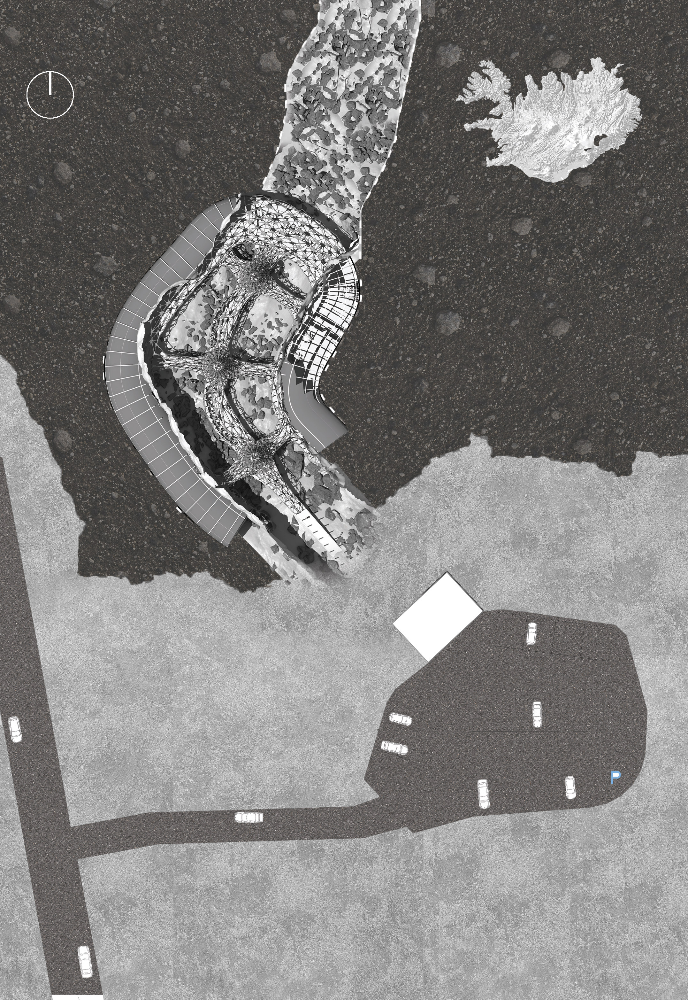
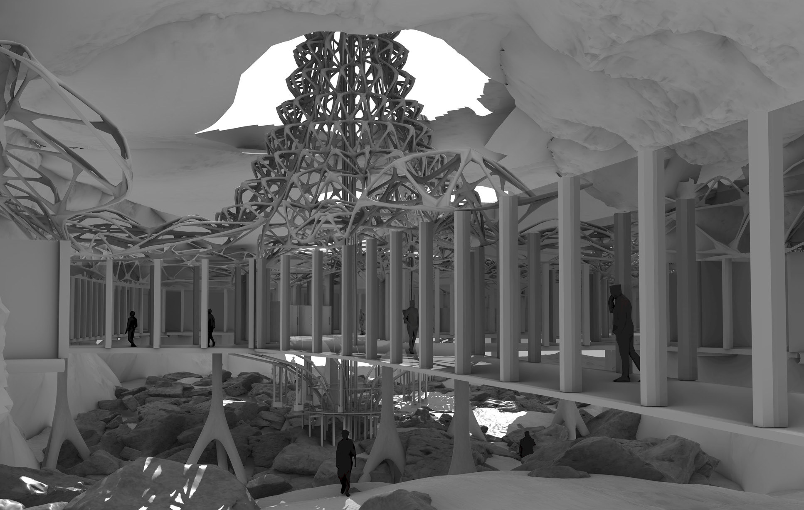
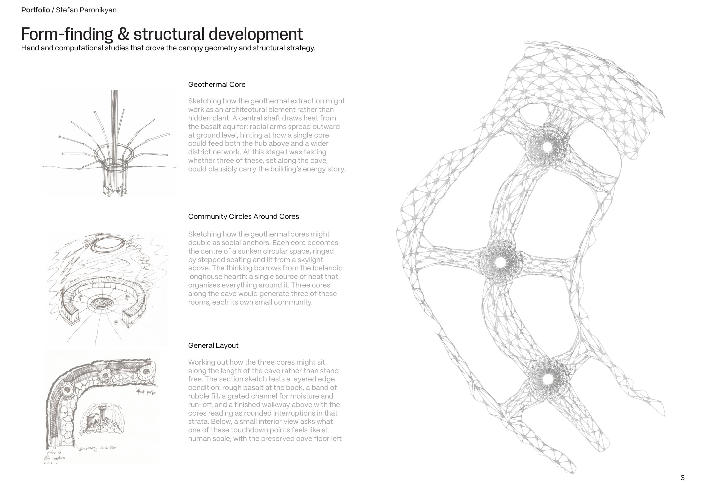
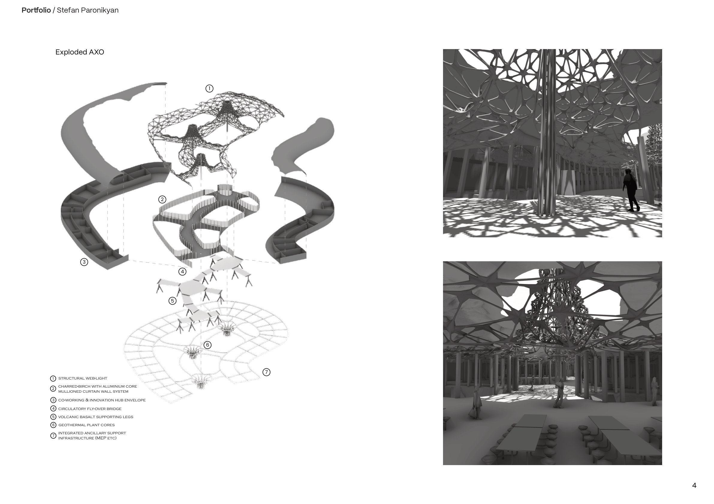
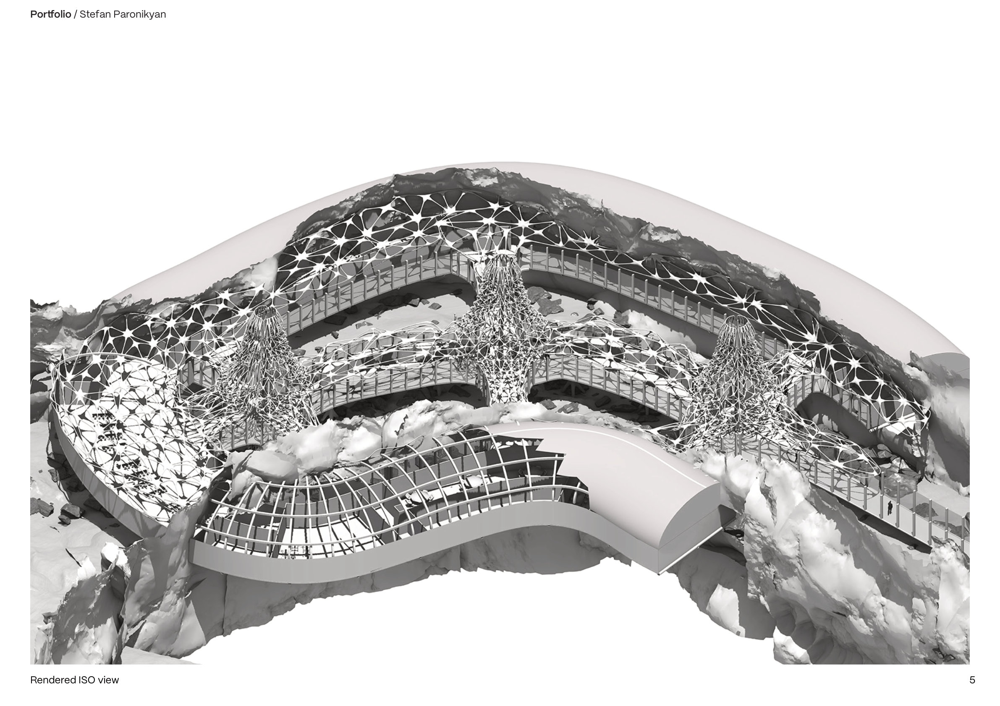

Nestled deep in the basalt of Hveragerði's lava ridge, the SAGA Centre re-forges Iceland's traditional longhouses for the twenty-first century. A single, linear long-house is quarried into living rock; above its geothermal "hearth-bridge" three timber-clad knowledge pods hover like glowing embers, each fed by one of the site's 120 °C production wells.
Heat becomes architecture: the radiant trench lures coders, growers and storytellers from every corner of the plan to trade ideas, bake rye bread in sand ovens, and author the next chapter of Icelandic innovation.
- Programme
- Innovation hub, cafeteria, tourist route
- Strategy
- Geothermal core, lattice substructure, charred-birch envelope
- Brief
- Open competition



Form-finding & structural development
Hand and computational studies drove the canopy geometry. A central shaft draws heat from the basalt aquifer; radial arms spread outward at ground level, hinting at how a single core could feed both the hub above and a wider district network.
The community circles borrow from the Icelandic longhouse hearth: a single source of heat that organises everything around it. Three cores along the cave generate three sunken rooms, each its own small community.


